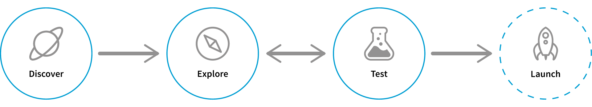
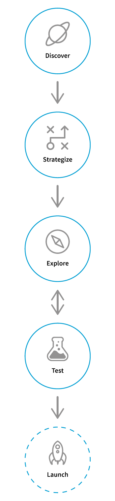

Hi hi!
You just found a small girl with a big backpack who carries goodies to care for human-beings.
WHO AM I?
I am a User Experience Designer based in Vancouver (the British Columbia, Canada one). I recently graduated from the Interactive Arts and Technology (SIAT) program at Simon Fraser University with a BA, with Distinction in the Design Concentration and currently undergoing a 2D Design certificate program at Emily Carr University. I also currently work as a full time contractor at Surrey City Hall.
I am always seeking out for new things to do, love to work with others and use my creative skills to exceed clients’ expectations. During my spare time, I volunteer for AniRevo, a local anime convention as a photographer and videographer, as well as making illustrations.
WHY I DESIGN?
As an individual, I am interested in tinkering with digital media, observing human behaviours and tapping into moments of life. Doing so, I can then blend the items together to craft cohesive experiences for people to cherish upon using a product.

MY DESIGN PROCESS
When I start a project, I first take a deep dive into the topic, followed an iterative cycle of sketching, trying different concepts and user testing. Once it is ready, the design is ready to implement and deliver.

